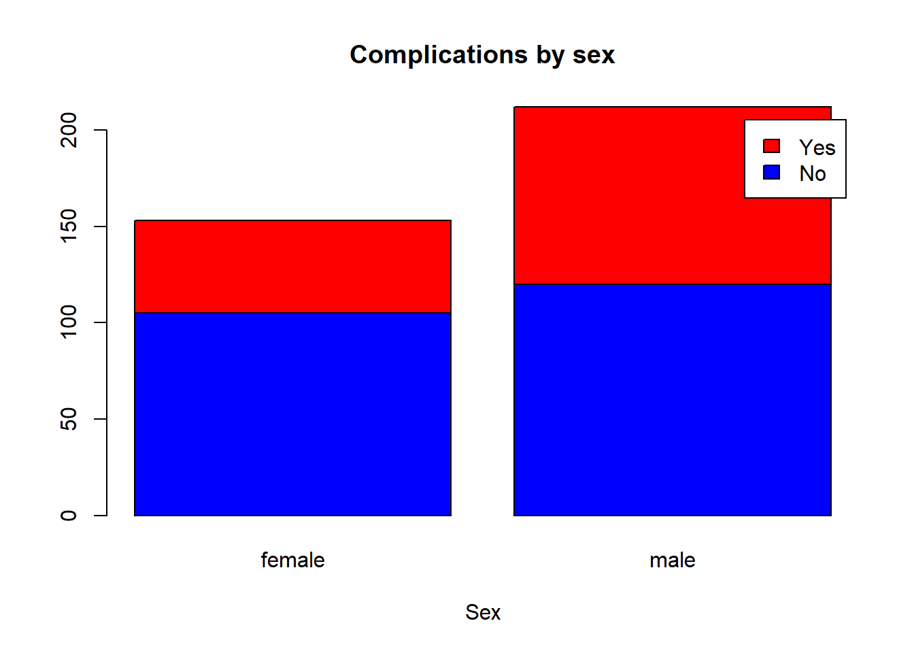

Chapter 7 Exploratory data analysis
7.1 Prepare folder and data
7.1.1 Set the working directory
7.2 Prepare folder and data
7.3 Set the working directory
This can be done in 2 ways:
- Using codes
- Using point and click
To use point and click, use the down arrow button next to More . Then click ‘Set as working directory’
7.3.1 List the files inside the working directory
All files will be displayed when you click ‘Files’.
Or you can use this code,
list.files()## [1] "_book"
## [2] "_bookdown.yml"
## [3] "_bookdown_files"
## [4] "_output.yml"
## [5] "01-intro.Rmd"
## [6] "02-text.Rmd"
## [7] "03-graphical.Rmd"
## [8] "04-report.Rmd"
## [9] "05-Grammar_of_Var.Rmd"
## [10] "06-EDA_Graphs.Rmd"
## [11] "07-preparing-R.Rmd"
## [12] "08-reading-statistical-data-in-R.Rmd"
## [13] "09-glm.Rmd"
## [14] "10-summary.Rmd"
## [15] "11-references.Rmd"
## [16] "book.bib"
## [17] "cholest.csv"
## [18] "cholest.dta"
## [19] "cholest.sav"
## [20] "cholest.xlsx"
## [21] "directory.jpg"
## [22] "export_csv.csv"
## [23] "export_stata.dta"
## [24] "eye.csv"
## [25] "eye.dta"
## [26] "eye.sav"
## [27] "eye.xlsx"
## [28] "index.Rmd"
## [29] "metab1.csv"
## [30] "metab1.dta"
## [31] "myfolder.png"
## [32] "openr.png"
## [33] "packages.bib"
## [34] "packages.jpg"
## [35] "panes.jpg"
## [36] "preamble.tex"
## [37] "qol.csv"
## [38] "qol.dta"
## [39] "qol.sav"
## [40] "qol.xlsx"
## [41] "R book KIM and Arifin.Rmd"
## [42] "R.png"
## [43] "R_book.Rproj"
## [44] "R_book_KIM_and_Arifin.Rmd"
## [45] "README.md"
## [46] "rstudio.png"
## [47] "site"
## [48] "style.css"
## [49] "Template_R_bookdown"
## [50] "toc.css"7.3.2 Reading dataset from SPSS file (.sav)
Dataset in SPSS format will end with .sav. To read SPSS data into R we use ‘foreign’ library.
Create a object to represent the SPSS data that we will read into R.
library(foreign)
dataSPSS<-read.spss('qol.sav', to.data.frame = TRUE)## re-encoding from UTF-87.4 Describing data
Let us examine the data
str(dataSPSS)## 'data.frame': 365 obs. of 13 variables:
## $ id : num 308 335 94 329 350 22 171 274 332 147 ...
## $ sex : Factor w/ 2 levels "female","male": 1 2 1 1 1 2 1 1 2 2 ...
## $ age : num 55 41 50 47 67 57 60 54 60 45 ...
## $ tahundx : num 14 4 5 10 13 4 4 15 13 3 ...
## $ tx : Factor w/ 4 levels "diet only","OHA and diet only",..: 3 4 2 4 4 2 2 2 4 2 ...
## $ group : Factor w/ 2 levels "\"group A\"",..: 2 2 1 2 2 1 1 1 2 1 ...
## $ complica : Factor w/ 2 levels "no","yes": 2 1 1 2 1 2 1 1 2 1 ...
## $ hba1c : num 8.1 8 7.5 9.4 11.7 8.1 7.5 9.2 NA NA ...
## $ fbs : num 6.9 4.8 8 3.6 12.5 8.5 NA NA NA NA ...
## $ rbs : num 16.7 7.4 13.2 7.4 NA 7.8 9.4 7.8 NA 12.4 ...
## $ tg_total : num 0.92 1.66 0.74 0.94 3.01 1.3 NA 1.9 NA NA ...
## $ choleste : num 7.09 2.91 5.94 3.27 7.1 3.54 NA 5.7 NA NA ...
## $ ADDQSCORE: num 0 -0.222 -0.333 -0.36 -0.44 ...
## - attr(*, "variable.labels")= Named chr "id_no" "sex" "" "" ...
## ..- attr(*, "names")= chr "id" "sex" "age" "tahundx" ...
## - attr(*, "codepage")= int 65001Now, let us summarize our data
summary(dataSPSS)## id sex age tahundx
## Min. : 1.0 female:153 Min. :21.00 Min. : 1.000
## 1st Qu.:126.0 male :212 1st Qu.:47.00 1st Qu.: 4.000
## Median :227.0 Median :53.00 Median : 7.000
## Mean :221.5 Mean :52.75 Mean : 8.795
## 3rd Qu.:325.0 3rd Qu.:59.00 3rd Qu.:12.000
## Max. :416.0 Max. :80.00 Max. :38.000
##
## tx group complica hba1c
## diet only : 10 "group A":248 no :225 Min. : 4.100
## OHA and diet only :238 "group B":117 yes:140 1st Qu.: 7.500
## insulin and diet only: 26 Median : 9.050
## all : 91 Mean : 9.301
## 3rd Qu.:10.775
## Max. :19.900
## NA's :111
## fbs rbs tg_total choleste
## Min. : 2.700 Min. : 3.900 Min. :0.380 Min. : 2.020
## 1st Qu.: 5.700 1st Qu.: 7.925 1st Qu.:1.125 1st Qu.: 4.308
## Median : 8.000 Median :11.300 Median :1.570 Median : 5.210
## Mean : 9.003 Mean :12.045 Mean :2.002 Mean : 5.437
## 3rd Qu.:11.900 3rd Qu.:15.000 3rd Qu.:2.385 3rd Qu.: 6.423
## Max. :29.200 Max. :31.500 Max. :8.020 Max. :13.100
## NA's :178 NA's :83 NA's :191 NA's :181
## ADDQSCORE
## Min. :-9.000
## 1st Qu.:-5.590
## Median :-3.944
## Mean :-4.179
## 3rd Qu.:-2.556
## Max. : 0.000
## 7.5 Graphing or Plotting data
You must ask yourselves these: 1. Which variable do you want to plot? 2. What is the type of that variable? Factor? Numerical? 3. Are you going to plot another variable together?
7.5.1 One variable: A categorical or factor variable
We can create a simple barchart
dist.sex<-table(dataSPSS$sex)
barplot(dist.sex,
main='Sex distribution',
xlab='Sex')7.5.2 One variable: A numerical variable
histogram
hist(dataSPSS$age, main = 'Age',
xlab='Age in years',
ylab='Count')
7.5.3 Two variables : A numerical with another numerical variable
We will use scatterplot to plot
plot(dataSPSS$tahundx, dataSPSS$age,
main = 'Duration having DM VS age',
xlab = 'Duration of DM', ylab = 'Age',
pch = 19)
Let us make a fit line
plot(dataSPSS$tahundx, dataSPSS$age,
main = 'Duration having DM VS age',
xlab = 'Duration of DM', ylab = 'Age',
pch = 19)
abline(lm(dataSPSS$age~dataSPSS$tahundx), col = 'red')
and a lowess
plot(dataSPSS$tahundx, dataSPSS$age,
main = 'Duration having DM VS age',
xlab = 'Duration of DM', ylab = 'Age',
pch = 19)
lines(lowess(dataSPSS$tahundx,dataSPSS$age), col = 'blue')
7.5.4 Two variables : A categorical variable with a categorical variable
Now, we will plot 2 categorical variables simultenously.
First, we will use stacked barchart
compl.sex<-table(dataSPSS$complica,dataSPSS$sex)
compl.sex##
## female male
## no 105 120
## yes 48 92barplot(compl.sex,
main='Complications by sex',
xlab='Sex',
col=c('blue','red'),
legend=c('No','Yes'))
Next, we will use grouped barchart
compl.sex##
## female male
## no 105 120
## yes 48 92barplot(compl.sex,
main = 'Complications according to sex',
xlab = 'Sex',
col = c('blue','red'),
legend = c('no','yes'),
beside = TRUE)